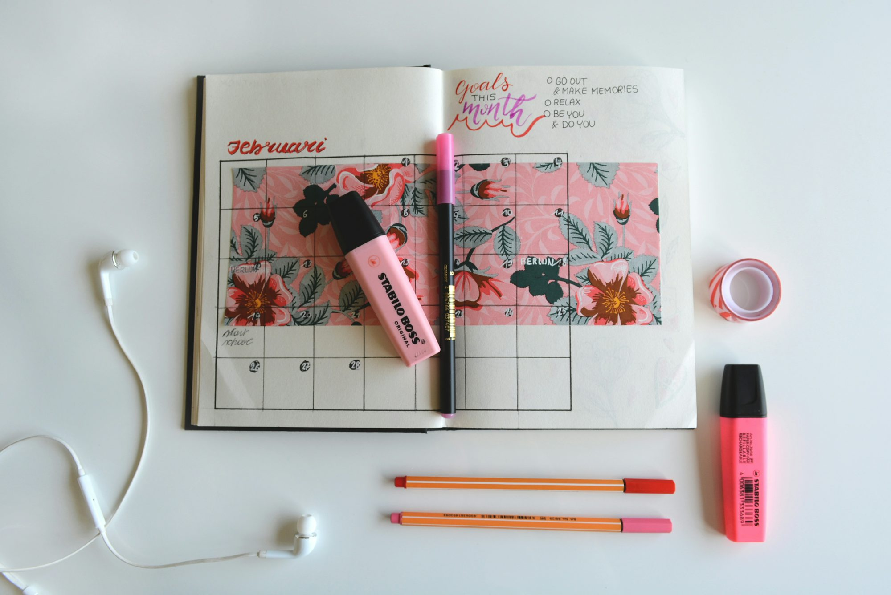

acadiva.blog
Writing Study Teaching This article examines Knowledge the Research Innovation different types of Examination notebooks available to Certification students, highlighting Literacy their Learning features Academic and Curriculum benefits to enhance learning Reading Skills and creativity. Training
The Importance of Choosing the Right Notebook
Selecting the right notebook is more than just a matter of aesthetics. The design and structure of a notebook can influence how effectively students take notes, organize information, and engage with their studies. Effective note-taking is crucial for understanding and retaining information, which ultimately contributes to academic success. Different types of notebooks cater to various preferences, allowing students to find the perfect fit for their learning needs.
Spiral-Bound Notebooks: Flexibility and Ease of Use
Spiral-bound notebooks are among the most popular choices for students due Study to their versatile design. These notebooks feature a wire or plastic spiral binding that allows the pages to lay flat when open, making it easy to write comfortably across the entire surface. This characteristic is particularly useful during lectures or fast-paced discussions, where students need to jot down extensive information quickly. Many spiral-bound notebooks also include perforated pages, enabling students to easily tear out sheets for sharing or submitting assignments.
The variety of sizes and styles available for spiral-bound notebooks means students can choose the format that best suits their needs. Whether they are taking notes for science, drafting essays in language arts, or sketching in art class, these notebooks offer the flexibility required for diverse educational tasks. Their adaptability makes them a favored option among students of all ages, enhancing their overall learning experience.
Composition Notebooks: A Timeless Classic
Composition notebooks have been a staple in educational settings for generations. With their sturdy covers and sewn binding, these notebooks offer durability and reliability, making them perfect companions for students throughout their academic journeys. Typically filled with lined or graph paper, composition notebooks provide a structured format that many learners find helpful for organizing their notes.
One of the defining features of composition notebooks is their nostalgic appeal. Many students associate them with their formative educational experiences, creating a comforting sense of familiarity. The thick covers protect the pages from wear and tear, ensuring that notes remain intact even after months of use. This durability encourages students to revisit their notes, reflect on their learning, and develop a deeper connection to the material they study.
Wirebound Notebooks: Easy Navigation
Wirebound notebooks offer another practical option for students, characterized by their metal wire binding that allows pages to turn easily. This design facilitates navigation, making it simple for students to flip back and forth between notes when studying or reviewing material. This feature Literacy is particularly beneficial during study sessions when quick reference to previous topics is often necessary.
Available in various sizes and styles, wirebound notebooks can accommodate different subjects and note-taking methods. They often include ruled, blank, or grid pages, allowing students to choose a format that aligns with their individual preferences. The lightweight and portable design of wirebound notebooks makes them ideal for students on the go, enabling them to carry their notes and ideas wherever they need to study.
Ring-Bound Notebooks: Customization and Organization
For students who appreciate a high degree of customization, ring-bound notebooks present a versatile option. Utilizing rings or discs to bind pages, these notebooks allow users to easily remove, add, or reorganize sheets as needed. This flexibility is particularly useful for students managing group projects or those Reading who prefer to keep their notes sorted by subject.
Many ring-bound notebooks also feature customizable covers, enabling students to express their individuality while staying organized. The ability to refill or replace pages adds an environmentally friendly aspect, as students can extend the lifespan of their notebooks without discarding them entirely. This adaptability promotes a sense of ownership over their materials, encouraging deeper engagement with their learning.
Traveler's Notebooks: Personal and Versatile
Traveler's notebooks offer a unique blend of style and functionality, typically crafted from leather or fabric. These notebooks feature an elastic band closure and allow users to customize their writing experience by adding or removing inserts for various purposes, such as journaling, sketching, or planning. This adaptability fosters creativity, as students can use the notebook for both academic and personal projects.
The portability of traveler's notebooks encourages students to carry their writing tools with them, making it easier to capture thoughts and ideas as they arise. This constant availability can lead to a habit of reflection and creativity, allowing students to document their journeys and insights in one cohesive space. Whether for academic or personal use, traveler's notebooks serve as versatile companions for those on the go.
Moleskine Notebooks: Quality and Elegance
Moleskine notebooks are renowned for their exceptional quality and stylish design. With durable covers and premium paper, these notebooks provide an elevated writing experience that enhances both creativity and productivity. Available in various sizes and styles, including ruled, plain, and dotted paper, Moleskine notebooks cater to a wide range of preferences and uses.
The luxurious feel of Moleskine paper encourages thoughtful and creative writing, fostering a deeper connection between students and their work. Whether used for taking notes during lectures or journaling after class, Moleskine notebooks inspire students to engage with their thoughts and ideas more meaningfully. While they may come at a premium price, the quality and aesthetic appeal justify the investment for those serious about their education.
Specialty Notebooks: Tailored to Individual Needs
Specialty notebooks are designed for specific educational purposes, offering unique features that cater to particular interests or requirements. Bullet journals, for instance, combine organization with Writing creativity, allowing students to create personalized layouts for tracking assignments, deadlines, and goals. This customization fosters accountability and encourages students to take charge of their academic responsibilities.
Sketchbooks are essential for visual artists, providing high-quality paper suited for drawing and painting. Similarly, project planning notebooks are ideal for students managing group assignments, helping them map out tasks and timelines effectively. By selecting specialty notebooks that align with their interests, students can enhance their learning experiences and cultivate a deeper connection with their subjects.
Smart Notebooks: Bridging Analog and Digital
As technology continues to reshape education, smart notebooks have emerged as innovative tools that blend traditional writing with digital capabilities. These notebooks allow students to digitize their handwritten notes using apps or technologies embedded in the pages. This integration appeals to students who enjoy the tactile experience of Training writing by hand while also wanting to maintain a digital record of their work.
Smart notebooks enhance organization and facilitate collaboration, enabling students to easily share their digital notes with peers or instructors. This accessibility encourages community engagement in the learning process, allowing students to learn from each other and grow together.
Conclusion: Empowering Learning Through the Right Notebook
In conclusion, the choice of notebook can significantly influence a student's learning experience. From spiral-bound and composition notebooks to innovative smart options, each type offers unique features that cater to various learning styles. By understanding the benefits of different notebooks, students can select the tools that best align with their preferences and enhance their academic journeys.
Ultimately, the right notebook serves not only as a practical tool but also as a source of inspiration, encouraging creativity and fostering a deeper connection to the learning process. As students explore their options and find the notebook that resonates with them, they unlock their potential and enrich their educational experiences, one page at a time.